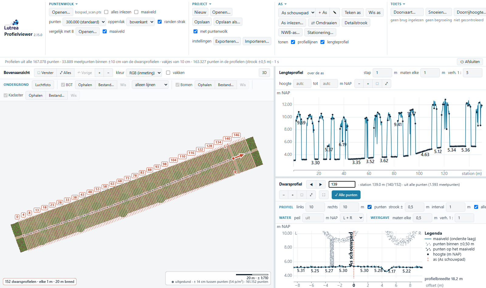
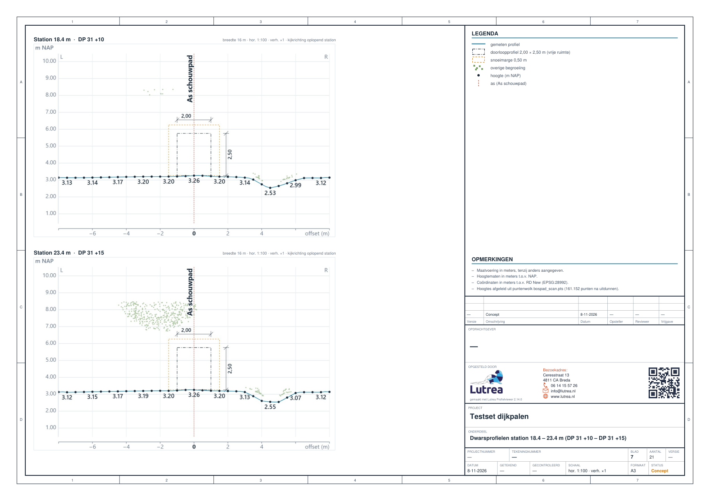
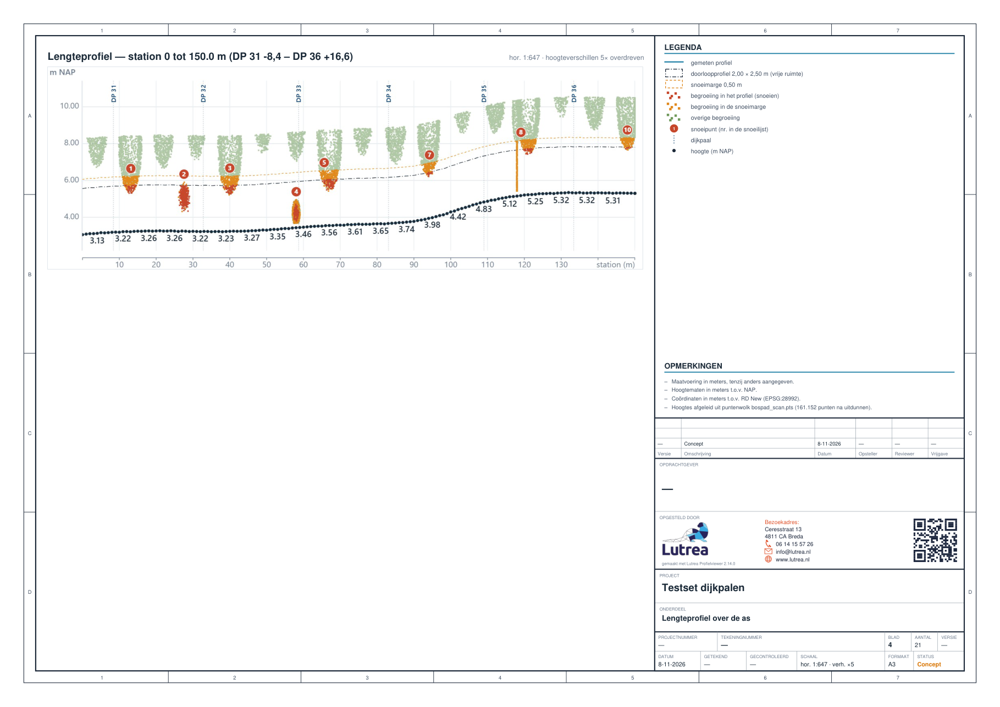

Lutrea Profielviewer · tool 1 van 4
Profielen Tool
Van puntenwolk naar lengte- en dwarsprofielen op schaal
Voor tekenaars, ontwerpers en adviseurs bij gemeente, waterschap en ingenieursbureau

Profielen ToolDoorvaarthoogteDoorrijhoogteSnoeien
Open de puntenwolk, leg de as en je hebt in een paar minuten een lengteprofiel en dwarsprofielen op schaal, met je eigen stempel. Alles draait op je eigen pc; alleen de ondergrond komt van PDOK. De uitvoer gaat zo naar AutoCAD, Civil 3D, QGIS en openBIM.
1
Inlezen
LAS, LAZ of PTS in RD/NAP. Grote scans worden één keer omgezet naar vakken van 50 × 50 m; je kiest welke klassen meedoen.
2
As leggen
Tekenen, inlezen (GeoPackage, GeoJSON, shapefile, DXF) of uit het NWB halen. Dijkpalen of hectometrering erbij.
3
Profielen
Interval, breedte en verhouding zelf kiezen. Maaiveld uit de wolk, alle punten in een strook, BGT en kadaster in de doorsnede.
4
Opleveren
PDF A4 t/m A0 op schaal, DXF met dezelfde bladen als layouts, IFC 4.3, GeoPackage en CSV.

A4 – A0
PDF op schaal, één bestand of losse bladen, met stempel, logo's en QR-code
5 formaten
PDF, DXF (AutoCAD / Civil 3D), IFC 4.3, GeoPackage (QGIS) en CSV
Alle punten
grote scans in vakken van 50 × 50 m; getest met een dijk van 16 mln punten en een dichte dronescan van 441 mln (met klassen kiezen)
DP 12 +40
stationering op dijkpalen of hectometrering in plaats van alleen meters


Wat je krijgt
- Een as met stations, ook links en rechts los in te stellen
- Lengteprofiel en dwarsprofielen op elke gewenste afstand
- Alle punten in het dwarsprofiel: bomen, stammen, de weg onder de kroon
- BGT, bomen, luchtfoto en kadaster van PDOK als ondergrond
- Een tweede meting (B) ernaast, bijvoorbeeld een oudere scan
- Projectmap: alles bewaard, morgen verder waar je was
Waarom het werkt
- Gemaakt door een CAD/BIM-specialist voor het dagelijkse werk in Civil 3D en QGIS
- Coördinaten altijd in RD, hoogtes in m NAP: geen omrekenen
- Je puntenwolk blijft op je eigen pc; er gaat niets naar de cloud
- Windows-programma met een setup, zonder beheerdersrechten
- DXF met dezelfde bladen als de PDF: wat je ziet is wat je levert